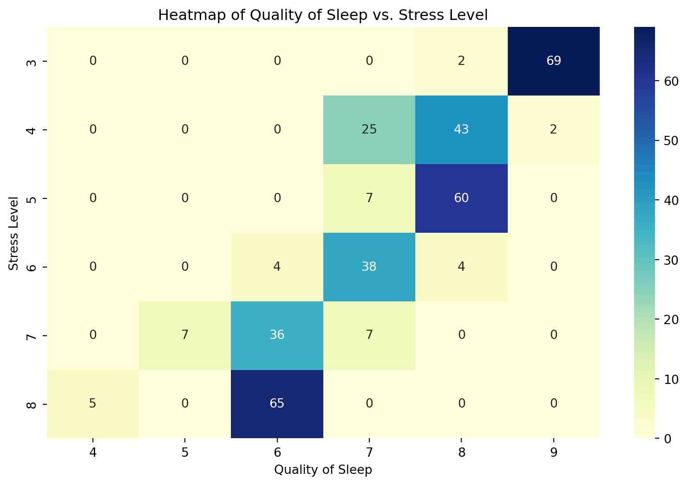

Sleep and Employment: Predicting Job Classification through Data Analytics
Introduction
This study aims to predict job roles accurately by analyzing the relationship between sleep patterns, job classification, and other relevant factors. By utilizing sleep-related data and demographics in a model, the researchers seek to optimize workforce planning and develop personalized workplace strategies.
Overview of Dataset
| # | Column | Non-Null Count | Dtype |
|---|---|---|---|
| 0 | Person ID | 374 non-null | int64 |
| 1 | Gender | 374 non-null | object |
| 2 | Age | 374 non-null | int64 |
| 3 | Occupation | 374 non-null | object |
| 4 | Sleep Duration | 374 non-null | float64 |
| 5 | Quality of Sleep | 374 non-null | int64 |
| 6 | Physical Activity Level | 374 non-null | int64 |
| 7 | Stress Level | 374 non-null | int64 |
| 8 | BMI Category | 374 non-null | object |
| 9 | Blood Pressure | 374 non-null | object |
| 10 | Heart Rate | 374 non-null | int64 |
| 11 | Daily Steps | 374 non-null | int64 |
| 12 | Sleep Disorder | 155 non-null | object |
Occupation By The Numbers
| # | Occupation | Count |
|---|---|---|
| 0 | Accountant | 37 |
| 1 | Doctor | 71 |
| 2 | Engineer | 63 |
| 3 | Lawyer | 47 |
| 4 | Manager | 1 |
| 5 | Nurse | 73 |
| 6 | Sales Rep | 2 |
| 7 | Salesperson | 32 |
| 8 | Scientist | 4 |
| 9 | Software Eng | 4 |
| 10 | Teacher | 40 |
| # | Occupation Group | Count |
|---|---|---|
| 0 | STEM | 108 |
| 1 | Medical | 144 |
| 2 | Sales | 35 |
| 3 | Teacher | 40 |
| 4 | Lawyer | 47 |
Problem Statement
The research aims to improve human resource management strategies and personalized workplace interventions by accurately predicting job classifications through the analysis of sleep patterns and other health-related factors, exploring the relationship between sleep, stress, and job characteristics.
| # | Stress Level | Count |
|---|---|---|
| 0 | 3 | 71 |
| 1 | 4 | 70 |
| 2 | 5 | 67 |
| 3 | 6 | 46 |
| 4 | 7 | 50 |
| 5 | 8 | 70 |
| # | Quality of Sleep | Count |
|---|---|---|
| 0 | 4 | 5 |
| 1 | 5 | 7 |
| 2 | 6 | 105 |
| 3 | 7 | 77 |
| 4 | 8 | 109 |
| 5 | 9 | 71 |
Research Question(s)
To what extent do sleep patterns, along with other factors, correlate with a person’s job classification?
How accurately can a classification model predict a person’s job based on their sleep patterns and other relevant factors?
| Occupation | Female | Male |
|---|---|---|
| Accountant | 36.0 | 1.0 |
| Doctor | 2.0 | 69.0 |
| Engineer | 32.0 | 31.0 |
| Lawyer | 2.0 | 45.0 |
| Manager | 1.0 | 0.0 |
| Nurse | 73.0 | 0.0 |
| Sales Rep | 0.0 | 2.0 |
| Salesperson | 0.0 | 32.0 |
| Scientist | 4.0 | 0.0 |
| Software Eng | 0.0 | 4.0 |
| Teacher | 35.0 | 5.0 |
| Total | 185.0 | 189.0 |
# Methodology
Results
Accuracy of the random forest classifier: 0.88
Discussion and Implications
sequenceDiagram
participant CorDarryl
participant Willa
Willa->>CorDarryl: Why does the SVM Model take so long to run?
loop Healthcheck
CorDarryl->>Willa: Maybe we consider tuning and potentially doing an additional anaysis?
end
Note right of Willa: We will get through this <br/> Positive Vibes!
CorDarryl-->>Willa: Great!
Willa->>CorDarryl: How about you?
CorDarryl-->>Willa: Jolly good!
Conclusion
References
Appendix
To learn more about Quarto websites visit https://quarto.org/docs/websites.
library(reticulate)
version <- "3.11.3"
install_python(version = version)
virtualenv_create("my-python", python_version = version)use_virtualenv("my-python", required = TRUE)
virtualenv_install(envname = "my-python", "matplotlib", ignore_installed = FALSE, pip_options = character())
virtualenv_install(envname = "my-python", "numpy", ignore_installed = FALSE, pip_options = character())
virtualenv_install(envname = "my-python", "pandas", ignore_installed = FALSE, pip_options = character())Show the code
import pandas as pd
import numpy as np
import seaborn as sns
import matplotlib.pyplot as plt
from sklearn.ensemble import RandomForestClassifier
from sklearn.model_selection import train_test_split
from sklearn.preprocessing import LabelEncoder
from sklearn.metrics import accuracy_score
sleep = pd.read_csv('/Users/Shared/Python/Sleep_health_and_lifestyle_dataset.csv')Show the code
#look at overview of dataset
sleep.info()<class 'pandas.core.frame.DataFrame'>
RangeIndex: 374 entries, 0 to 373
Data columns (total 13 columns):
# Column Non-Null Count Dtype
--- ------ -------------- -----
0 Person ID 374 non-null int64
1 Gender 374 non-null object
2 Age 374 non-null int64
3 Occupation 374 non-null object
4 Sleep Duration 374 non-null float64
5 Quality of Sleep 374 non-null int64
6 Physical Activity Level 374 non-null int64
7 Stress Level 374 non-null int64
8 BMI Category 374 non-null object
9 Blood Pressure 374 non-null object
10 Heart Rate 374 non-null int64
11 Daily Steps 374 non-null int64
12 Sleep Disorder 155 non-null object
dtypes: float64(1), int64(7), object(5)
memory usage: 38.1+ KBShow the code
sleep.describe()| Person ID | Age | Sleep Duration | Quality of Sleep | Physical Activity Level | Stress Level | Heart Rate | Daily Steps | |
|---|---|---|---|---|---|---|---|---|
| count | 374.000000 | 374.000000 | 374.000000 | 374.000000 | 374.000000 | 374.000000 | 374.000000 | 374.000000 |
| mean | 187.500000 | 42.184492 | 7.132086 | 7.312834 | 59.171123 | 5.385027 | 70.165775 | 6816.844920 |
| std | 108.108742 | 8.673133 | 0.795657 | 1.196956 | 20.830804 | 1.774526 | 4.135676 | 1617.915679 |
| min | 1.000000 | 27.000000 | 5.800000 | 4.000000 | 30.000000 | 3.000000 | 65.000000 | 3000.000000 |
| 25% | 94.250000 | 35.250000 | 6.400000 | 6.000000 | 45.000000 | 4.000000 | 68.000000 | 5600.000000 |
| 50% | 187.500000 | 43.000000 | 7.200000 | 7.000000 | 60.000000 | 5.000000 | 70.000000 | 7000.000000 |
| 75% | 280.750000 | 50.000000 | 7.800000 | 8.000000 | 75.000000 | 7.000000 | 72.000000 | 8000.000000 |
| max | 374.000000 | 59.000000 | 8.500000 | 9.000000 | 90.000000 | 8.000000 | 86.000000 | 10000.000000 |
Show the code
sleep.Occupation.unique()array(['Software Engineer', 'Doctor', 'Sales Representative', 'Teacher',
'Nurse', 'Engineer', 'Accountant', 'Scientist', 'Lawyer',
'Salesperson', 'Manager'], dtype=object)Show the code
sleep.groupby('Occupation').agg(
num_occ=('Occupation', 'size')
).reset_index()| Occupation | num_occ | |
|---|---|---|
| 0 | Accountant | 37 |
| 1 | Doctor | 71 |
| 2 | Engineer | 63 |
| 3 | Lawyer | 47 |
| 4 | Manager | 1 |
| 5 | Nurse | 73 |
| 6 | Sales Representative | 2 |
| 7 | Salesperson | 32 |
| 8 | Scientist | 4 |
| 9 | Software Engineer | 4 |
| 10 | Teacher | 40 |
Show the code
def occupation_group(row):
if row["Occupation"] in ["Salesperson", "Sales Representative", "Manager"]:
return "Sales"
elif row["Occupation"] in ["Software Engineer", "Scientist", "Accountant"]:
return "STEM"
elif row["Occupation"] in ["Doctor", "Nurse"]:
return "Medical"
else:
return row["Occupation"]
sleep["Occupation_Group"] = sleep.apply(occupation_group, axis=1)Show the code
# Look at the distribution based on Age
fig, ax = plt.subplots(figsize=(10, 5))
ax.hist(sleep['Age'], bins=15)
ax.set_title('Distribution of Ages')
ax.set_xlabel('Age')
ax.set_ylabel('Frequency')
plt.show()Show the code
sleep.groupby('Stress Level').agg(
num_individuals=('Stress Level', 'size')
).reset_index()| Stress Level | num_individuals | |
|---|---|---|
| 0 | 3 | 71 |
| 1 | 4 | 70 |
| 2 | 5 | 67 |
| 3 | 6 | 46 |
| 4 | 7 | 50 |
| 5 | 8 | 70 |
Show the code
# Look at the distribution based on Age
fig, ax = plt.subplots(figsize=(10, 5))
ax.hist(sleep['Sleep Duration'], bins=20)
ax.set_title('Distribution of Sleep Duration')
ax.set_xlabel('Sleep Duration')
ax.set_ylabel('Frequency')
plt.show()
#Figure out who is 8.5?Show the code
sleep.groupby('Quality of Sleep').agg(
num_individuals=('Quality of Sleep', 'size')
).reset_index()| Quality of Sleep | num_individuals | |
|---|---|---|
| 0 | 4 | 5 |
| 1 | 5 | 7 |
| 2 | 6 | 105 |
| 3 | 7 | 77 |
| 4 | 8 | 109 |
| 5 | 9 | 71 |
Show the code
sleep.groupby('Gender').agg(
num_occ=('Gender', 'size')
).reset_index()| Gender | num_occ | |
|---|---|---|
| 0 | Female | 185 |
| 1 | Male | 189 |
Show the code
grouped_data = sleep.groupby(['Gender', 'Occupation']).size().reset_index(name='n')
# Pivot the data to get 'Gender' as columns and 'Occupation' as index
pivot_data = grouped_data.pivot(index='Occupation', columns='Gender', values='n').fillna(0)
# Rename the columns and reset the index
pivot_data.columns.name = None
pivot_data = pivot_data.reset_index()
pivot_data| Occupation | Female | Male | |
|---|---|---|---|
| 0 | Accountant | 36.0 | 1.0 |
| 1 | Doctor | 2.0 | 69.0 |
| 2 | Engineer | 32.0 | 31.0 |
| 3 | Lawyer | 2.0 | 45.0 |
| 4 | Manager | 1.0 | 0.0 |
| 5 | Nurse | 73.0 | 0.0 |
| 6 | Sales Representative | 0.0 | 2.0 |
| 7 | Salesperson | 0.0 | 32.0 |
| 8 | Scientist | 4.0 | 0.0 |
| 9 | Software Engineer | 0.0 | 4.0 |
| 10 | Teacher | 35.0 | 5.0 |
Show the code
grouped_data = sleep.groupby(['Stress Level', 'Occupation']).size().reset_index(name='n')
# Pivot the data to get 'Gender' as columns and 'Occupation' as index
pivot_data = grouped_data.pivot(index='Occupation', columns='Stress Level', values='n').fillna(0)
# Rename the columns and reset the index
pivot_data.columns.name = None
pivot_data = pivot_data.reset_index()
pivot_data| Occupation | 3 | 4 | 5 | 6 | 7 | 8 | |
|---|---|---|---|---|---|---|---|
| 0 | Accountant | 2.0 | 26.0 | 0.0 | 3.0 | 6.0 | 0.0 |
| 1 | Doctor | 4.0 | 0.0 | 2.0 | 32.0 | 0.0 | 33.0 |
| 2 | Engineer | 34.0 | 9.0 | 16.0 | 1.0 | 3.0 | 0.0 |
| 3 | Lawyer | 0.0 | 0.0 | 44.0 | 3.0 | 0.0 | 0.0 |
| 4 | Manager | 0.0 | 0.0 | 1.0 | 0.0 | 0.0 | 0.0 |
| 5 | Nurse | 31.0 | 4.0 | 0.0 | 2.0 | 4.0 | 32.0 |
| 6 | Sales Representative | 0.0 | 0.0 | 0.0 | 0.0 | 0.0 | 2.0 |
| 7 | Salesperson | 0.0 | 0.0 | 0.0 | 0.0 | 32.0 | 0.0 |
| 8 | Scientist | 0.0 | 0.0 | 0.0 | 2.0 | 0.0 | 2.0 |
| 9 | Software Engineer | 0.0 | 0.0 | 2.0 | 1.0 | 0.0 | 1.0 |
| 10 | Teacher | 0.0 | 31.0 | 2.0 | 2.0 | 5.0 | 0.0 |
Show the code
# Create the heatmap using seaborn
sns.heatmap(pivot_data.set_index('Occupation'), annot=True, cmap='YlGnBu', fmt='g')
# Set the title and labels
plt.title("Stress Level vs Occupation Heatmap")
plt.xlabel("Stress Level")
plt.ylabel("Occupation")
# Display the heatmap
plt.show()
Show the code
grouped_data = sleep.groupby(['Quality of Sleep', 'Stress Level']).size().reset_index(name='Total Counts')
# Pivot the data to create a heatmap
pivot_data = grouped_data.pivot(index='Stress Level', columns='Quality of Sleep', values='Total Counts').fillna(0)
# Create the heatmap using seaborn
plt.figure(figsize=(10, 6))
sns.heatmap(pivot_data, annot=True, cmap='YlGnBu', fmt='g')
plt.xlabel('Quality of Sleep')
plt.ylabel('Stress Level')
plt.title('Heatmap of Quality of Sleep vs. Stress Level')
plt.show()
Show the code
# Select some columns that might have a correlation
numerical_data = sleep[['Age', 'Sleep Duration','Quality of Sleep','Physical Activity Level', 'Stress Level','Heart Rate', 'Daily Steps']]
correlation_matrix = numerical_data.corr()
# Generate the heatmap and use a new color sheme
ax = sns.heatmap(correlation_matrix, annot=True, cmap="PuOr");
fig = ax.get_figure()Show the code
import pandas as pd
from sklearn.model_selection import train_test_split
from sklearn.ensemble import RandomForestClassifier
from sklearn.metrics import accuracy_score
from sklearn.metrics import confusion_matrix
from sklearn.metrics import ConfusionMatrixDisplay
from sklearn.preprocessing import OneHotEncoder
sleep = sleep.fillna("0")
# Assuming 'sleep' is your DataFrame
x = sleep.drop(columns=['Person ID', 'Sleep Disorder', 'Occupation_Group', 'Blood Pressure'])
y = sleep['Sleep Disorder']
# Assuming 'other_data' is another DataFrame containing the 'Medical' column
# Make sure the column name is correct, and there are no leading/trailing whitespaces.
# Let's say the correct column name is 'Medical'. If not, replace 'Medical' with the correct column name.
#other_data = x['Medical']
label_encoder = LabelEncoder()
categorical_cols = ['Gender', 'Occupation', 'BMI Category', 'Stress Level']
for col in categorical_cols:
x[col] = label_encoder.fit_transform(x[col])
x_train, x_test, y_train, y_test = train_test_split(x, y, test_size=0.2, random_state=42)
# One-hot encode the categorical columns (if needed)
encoder = OneHotEncoder()
x_train_encoded = encoder.fit_transform(x_train[categorical_cols])
x_test_encoded = encoder.transform(x_test[categorical_cols])
# Combine the one-hot encoded features with other numerical features
import numpy as np
x_train_final = np.hstack((x_train_encoded.toarray(), x_train.drop(columns=categorical_cols).values))
x_test_final = np.hstack((x_test_encoded.toarray(), x_test.drop(columns=categorical_cols).values))
# Now you can proceed with the RandomForestClassifier fitting and prediction steps
rf_classifier = RandomForestClassifier(n_estimators=100, random_state=42)
rf_classifier.fit(x_train_final, y_train)
y_pred = rf_classifier.predict(x_test_final)
accuracy = accuracy_score(y_test, y_pred)
print("Accuracy of the random forest classifier:", accuracy)
ConfusionMatrixDisplay.from_predictions(y_test, y_pred, labels = rf_classifier.classes_, display_labels=rf_classifier.classes_, cmap = "YlGnBu")
#y_test, y_pred, labels = rf_classifier.classes_
#disp.plot()
plt.show()Accuracy of the random forest classifier: 0.88Show the code
import pandas as pd
from sklearn.model_selection import train_test_split
from sklearn.ensemble import RandomForestClassifier
from sklearn.svm import SVC
from sklearn.metrics import confusion_matrix
from sklearn.metrics import ConfusionMatrixDisplay
from sklearn.metrics import accuracy_score
from sklearn.preprocessing import LabelEncoder, OneHotEncoder
# Assuming 'sleep' is your DataFrame
x = sleep.drop(columns=['Person ID', 'Sleep Disorder', 'Occupation_Group', 'Blood Pressure'])
y = sleep['Sleep Disorder']
label_encoder = LabelEncoder()
categorical_cols = ['Gender', 'Occupation', 'BMI Category', 'Stress Level']
for col in categorical_cols:
x[col] = label_encoder.fit_transform(x[col])
# One-hot encode the categorical columns (if needed)
encoder = OneHotEncoder()
x_encoded = encoder.fit_transform(x[categorical_cols])
# Combine the one-hot encoded features with other numerical features
import numpy as np
x_final = np.hstack((x_encoded.toarray(), x.drop(columns=categorical_cols).values))
x_train, x_test, y_train, y_test = train_test_split(x_final, y, test_size=0.2, random_state=42)
# Random Forest Classifier
rf_classifier = RandomForestClassifier(n_estimators=100, random_state=42)
rf_classifier.fit(x_train, y_train)
y_pred_rf = rf_classifier.predict(x_test)
accuracy_rf = accuracy_score(y_test, y_pred_rf)
print("Accuracy of the random forest classifier:", accuracy_rf)
conf_matrix = confusion_matrix(y_test, y_pred_rf)
print("Confusion Matrix:")
print(conf_matrix)Accuracy of the random forest classifier: 0.88
Confusion Matrix:
[[42 1 0]
[ 1 13 2]
[ 1 4 11]]#```{python} import pandas as pd from sklearn.model_selection import train_test_split from sklearn.ensemble import RandomForestClassifier from sklearn.svm import SVC from sklearn.metrics import confusion_matrix from sklearn.metrics import ConfusionMatrixDisplay from sklearn.metrics import accuracy_score from sklearn.preprocessing import LabelEncoder, OneHotEncoder
Assuming ‘sleep’ is your DataFrame
x = sleep.drop(columns=[‘Person ID’, ‘Sleep Disorder’, ‘Occupation_Group’, ‘Blood Pressure’]) y = sleep[‘Sleep Disorder’]
label_encoder = LabelEncoder() categorical_cols = [‘Gender’, ‘Occupation’, ‘BMI Category’, ‘Stress Level’] for col in categorical_cols: x[col] = label_encoder.fit_transform(x[col])
One-hot encode the categorical columns (if needed)
encoder = OneHotEncoder() x_encoded = encoder.fit_transform(x[categorical_cols])
Combine the one-hot encoded features with other numerical features
import numpy as np x_final = np.hstack((x_encoded.toarray(), x.drop(columns=categorical_cols).values))
x_train, x_test, y_train, y_test = train_test_split(x_final, y, test_size=0.2, random_state=42)
Support Vector Machine (SVM) Classifier
svm_classifier = SVC(kernel=‘linear’, random_state=42) svm_classifier.fit(x_train, y_train) y_pred_svm = svm_classifier.predict(x_test) accuracy_svm = accuracy_score(y_test, y_pred_svm)
print(“Accuracy of the SVM classifier:”, accuracy_svm) conf_matrix = confusion_matrix(y_test, y_pred_svm) print(“Confusion Matrix:”) print(conf_matrix)
#```{python}
import pandas as pd
from sklearn.model_selection import train_test_split
from sklearn.ensemble import RandomForestClassifier
from sklearn.svm import SVC
from sklearn.metrics import confusion_matrix
from sklearn.metrics import ConfusionMatrixDisplay
from sklearn.metrics import accuracy_score
from sklearn.preprocessing import LabelEncoder, OneHotEncoder
# Assuming 'sleep' is your DataFrame
x = sleep.drop(columns=['Person ID', 'Sleep Disorder', 'Occupation_Group', 'Blood Pressure'])
y = sleep['Sleep Disorder']
label_encoder = LabelEncoder()
categorical_cols = ['Gender', 'Occupation', 'BMI Category', 'Stress Level']
for col in categorical_cols:
x[col] = label_encoder.fit_transform(x[col])
# One-hot encode the categorical columns (if needed)
encoder = OneHotEncoder()
x_encoded = encoder.fit_transform(x[categorical_cols])
# Combine the one-hot encoded features with other numerical features
import numpy as np
x_final = np.hstack((x_encoded.toarray(), x.drop(columns=categorical_cols).values))
x_train, x_test, y_train, y_test = train_test_split(x_final, y, test_size=0.2, random_state=42)
# Support Vector Machine (SVM) Classifier
svm_classifier = SVC(kernel='linear', random_state=42)
svm_classifier.fit(x_train, y_train)
y_pred_svm = svm_classifier.predict(x_test)
accuracy_svm = accuracy_score(y_test, y_pred_svm)
print("Accuracy of the SVM classifier:", accuracy_svm)
conf_matrix = confusion_matrix(y_test, y_pred_svm)
print("Confusion Matrix:")
print(conf_matrix)